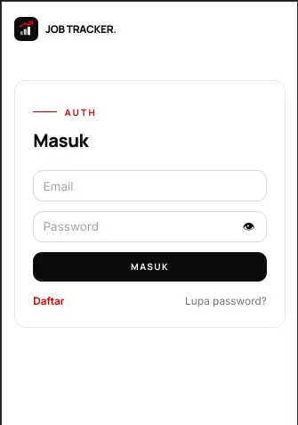
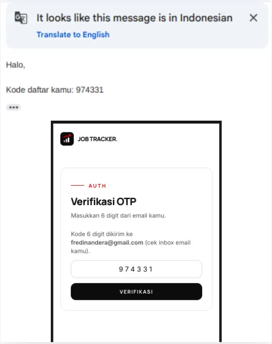
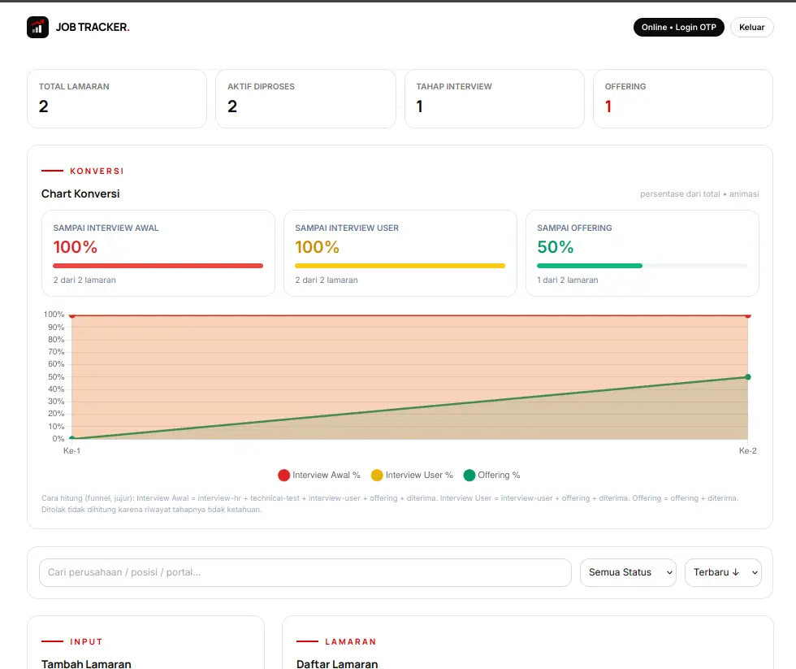
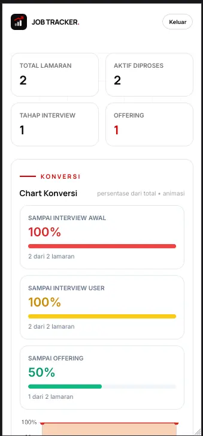

Experiment 010
Stable Frontend only · Backend in EXP 011 →Building a Production-Ready Job Tracker UI With Only a 35B Local Coder — No Framework.
Can a production-ready, recruiter-usable Job Tracker frontend — real auth flow, CRUD, search/filter/sort, responsive table-to-cards — be shipped in 4-5 hours with only a 35B local coder, no framework, just HTML5 + Tailwind CDN + Vanilla JS?
Tiel-Coder-35B via llama.cpp-server · 4-5 hours in one day · Live daily 08.00–21.00 WIB (UTC+7) · Full backend entrypoint in EXP 011
System Requirements
CPU
Intel Core i5-11400F
RAM
16GB DDR4 3200MT/s
GPU
RX 6700 XT 12GB gfx1031
OS
Ubuntu Desktop 26.04 LTS
Model
Tiel-Coder-35B-A3B-MTP-UD-Q4_K_S.gguf
Engine
llama.cpp-server
Stack
HTML5 + Tailwind CDN + Vanilla JS
Time / Status
4-5 hours in one day / STABLE
Built with local model above via llama.cpp-server. Inference flags covered in EXP 001 — not repeated here. Frontend runs browser-only on GitHub Pages, no build step.
Screenshots
Real UI proof — auth, dashboard, mobile. If backend is offline when you click demo, these still show exactly how it works.




Live Demo
Try it live — not a mockup.
Frontend live on GitHub Pages. New here? Register first, verify the OTP, then login to get your access token (see Live Demo Status for online hours).
Frontend: /jobtracker/ • Auth: /jobtracker/auth.html • API base: window.JOB_API (tunnel, changes when PC restarts)
For those of you unable to read this data from technical standpoint, here is the conclusion:
I needed a place to track job applications that works on laptop and phone, with real login.
I built it in an afternoon with a local AI coder running on my own GPU — no cloud AI, no framework.
You can click and try it live: login, add, edit, search. It looks simple because internal tools should be simple.
If login sometimes fails, my home PC (the database) is likely off — it is online daily 08.00–21.00 WIB (UTC+7). Screenshots above still show how it works.
Next page explains where the data goes and how login codes work.
Experiment Details
Job hunting scatters across spreadsheets, chat threads, and portal inboxes. I needed one tracker that enforces real login (not fake localStorage login), fast CRUD, searchable history, and thumb-friendly mobile.
A framework was overkill for a single-user internal tool. The bet: small separated files stay fast to iterate and easy to review.
Built in one day, 4-5 hours total, with Tiel-Coder-35B-A3B-MTP-UD-Q4_K_S.gguf via llama.cpp-server. AI handled syntax and boilerplate, decisions stayed with me. Inference flags are covered in EXP 001 and not repeated here. Honest scope: frontend only in this page, backend entrypoint in EXP 011.
Vanilla separation — guard.js as guard, store.js as database brain, app.js as view brain, auth.js as front door — is enough for production-feel internal tooling. Tailwind CDN gives portfolio-grade look with zero build step, ideal for GitHub Pages.
- 1.
Auth in one file:
auth.htmlholds 5 modes — login, register (name + phone + email + password), OTP verify, forgot, reset. Show/hide viadata-lihat, green/redauth-msgbox. - 2.
Dashboard: 4 stat cards, filter bar (search company/position/portal + 7 statuses + newest/oldest sort), left form, right list.
- 3.
Form rules: company, position, portal required. Date defaults to today. 7 stages:
baru, interview-hr, technical-test, interview-user, offering, diterima, ditolak. Optional link renders asBuka ↗. - 4.
Responsive: desktop table
min-w-[800px] hidden lg:blockvs mobile cardslg:hiddenwith big Edit/Delete. Empty state kept friendly. - 5.
Feedback:
toast()3s (bg-inksuccess,bg-accenterror),confirm()before delete, new-row highlight vialastAddedId.
window.JOB_API override for GitHub Pages tunnel, else hostname:7002. store.js exposes getAll/add/update/remove — sync cache read, async API write. guard.js checks GET /api/me with Bearer token from localStorage jobTracker.token, redirects to auth.html when missing or invalid. Full contract — 6 endpoints, Gmail OTP, opaque 1-hour token — in EXP 011.
- 1.
CORS on different ports — fetch blocked until backend allowed the frontend origin. Touched here, fixed there (EXP 011).
- 2.
Offline chart edge — when Chart.js fails to load, percentages still update via defensive
typeof Chart === undefined. - 3.
1-hour token expiry — first looked like a bug when kicked to login, turned out expected session behavior.
Small numbers that matter for an internal tool — no tok/s here, that is EXP 009.
Auth modes
5 in 1 file
login → reset
Status stages
7 stages
baru → ditolak
Views
Table + cards
desktop + mobile
Filter
3-way
search + status + sort
Feedback
3s toast
ink / accent
Framework
0 / 0 build
vanilla + CDN
Stable frontend live on GitHub Pages. Auditable vanilla files, responsive, auth-guarded. Backend local limitation documented separately below, not hidden.
Small, clear files beat one giant file when iterating quickly. Keeping auth decisions on the server — opaque tokens, route guards, generic error messages — keeps the frontend simple and easy to review, even for an internal tool. Chain: EXP 010 (UI you can click) → EXP 011 (where data goes) → EXP 001 (what machine runs the AI).
Frontend Code
Guard — js/guard.js (essence)
// No token → kick to auth.html before app renders
const token = localStorage.getItem("jobTracker.token");
if (!token) location.replace("auth.html");
fetch(GUARD_API + "/api/me", {
headers: { Authorization: "Bearer " + token }
}).then(r => { if (!r.ok) location.replace("auth.html"); });Store pattern — js/store.js (essence)
// app.js never touches localStorage directly // getAll() reads cache sync, add/update/remove write via API window.JOB_API = "https://aispec.tail06293c.ts.net"; // tunnel, changes
No .env, no SMTP secrets, no auth.db content here. That is EXP 011.
FAQ
Frequently Asked Questions
Is this just a static HTML demo?▼
No. Frontend is static on GitHub Pages, but auth + data go to a real backend (PHP 8.3 + SQLite) running on my PC for now. Guard checks token via /api/me on every open. Full entrypoint in EXP 011.
Why no framework? Is vanilla production-ready?▼
For this scale yes. Four small files (guard/store/app/auth) are easier to review and faster to iterate than framework boilerplate. No build step means GitHub Pages deploy is trivial.
Why does login sometimes fail?▼
Backend is not on a 24/7 VPS yet — it lives on my personal PC, online daily 08.00–21.00 WIB (UTC+7) when my PC is on. Outside those hours API is unreachable and login cannot succeed. Frontend shows a toast and stays readable. Screenshots remain as proof.
Live Demo Status
Local PC, not yet 24/7 VPS.
✅ What works now
- Frontend live on GitHub Pages
- Auth flow (login, register, OTP, reset)
- CRUD lamaran
- Search / filter / sort
- Responsive UI (table → cards)
- Real backend integration
- Usable by invited testers
- Backend online daily 08.00–21.00 WIB (UTC+7) when my PC is on
🚧 What isn't production yet
- Backend not yet 24/7
- Deployment still local (personal PC)
- Early-stage features
- Collecting user feedback
- Next iteration not yet done
As of now the backend runs locally on my personal PC, not yet published online to a VPS for 24/7 running. It is live daily 08.00–21.00 WIB (UTC+7) when my PC is on. If my PC is off, the backend is also off and the login page may fail to reach the server. This is expected. The frontend + screenshots on this page still show exactly how it works.
Disclaimer
Frontend stable, backend local
Validated with Tiel-Coder-35B via llama.cpp-server (flags in EXP 001). Times are build times (4-5h), not benchmark peaks. Demo backend online daily 08.00–21.00 WIB (UTC+7) when home PC on, unreachable outside those hours. I’m self-taught — corrections welcome.
Live: /jobtracker/ · Auth: /jobtracker/auth.html · Next: EXP 011 backend entrypoint (PHP 8.3 + SQLite auth.db, Docker :7002, 6 endpoints, Gmail OTP, opaque token 1h) · Inference background: EXP 001
Chain: EXP 001 inference → EXP 010 frontend → EXP 011 backend next.